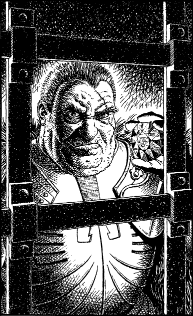

200
From out of the shadows of the secret passage steps Warlord Magnaarn. He is a huge man—not much over six feet tall but massively built. His body is sheathed in finely crafted armour that fits his frame like a glove, and his features are coarse and foreboding, accentuated by a fresh battle scar which runs diagonally from the top of his red-haired scalp to a point near the lobe of his left ear.
Arrogantly he approaches the portcullis and stares unblinkingly into your eyes. For a moment you consider attacking him, but your senses detect that he is surrounded by a field of energy so strong that already you feel it leeching your psychic powers. He reaches to a pocket inside his cloak and takes out a large black gemstone, which he holds level with his sneering face. Scarlet veins glow within the depths of this stone, swirling and undulating as if they are alive. Waves of dizziness force you to your knees as the evil power of the Doomstone of Darke washes over you, bleeding you of the strength and will to resist.

‘I’ve been waiting for you, Lone Wolf,’ says Magnaarn, with a condescending tone. ‘I’ve known your plan ever since my spies told me of your arrival at Vadera. After all, there could be but one reason why the great Grand Master of the Kai would come to Lencia at this time. Yet, as you can see, Grand Master, you are already too late to stop me.’
Magnaarn turns to his Tukodak guards and orders them to take Prarg away. You try to protest but you cannot find strength enough to voice the words. The warlord smiles at your weakness.
‘Know you this, Grand Master. Now that I possess the stone of power, nothing can stand in my way. You were the only threat to my victory, but now you’re a threat no longer.’
With this he steps away from the portcullis and turns to follow his guards as they drag Prarg into the secret passage.
‘Farewell,’ he says, sardonically, before disappearing into the portal, ‘and remember my first words to you: welcome to your tomb.’
With these chilling words echoing in your mind, you watch as he disappears into the passage and the wall closes behind him.